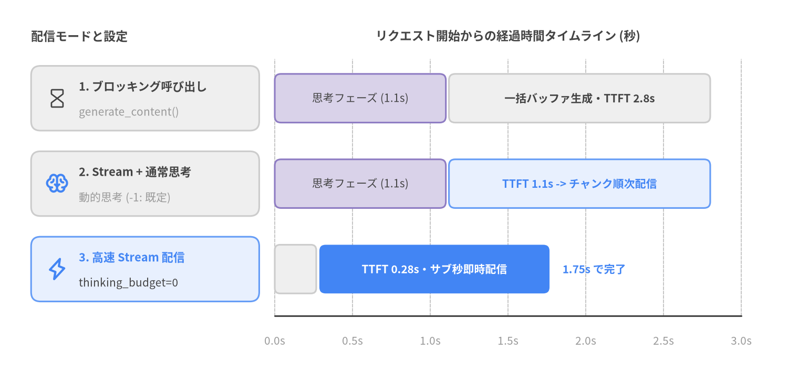
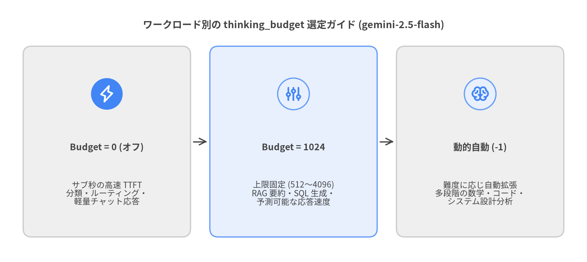

03. Streaming 配信と ThinkingConfig による思考制御
対話型 AI アプリケーションの体感速度は、Streaming 配信 (generate_content_stream) による最初の1トークン到達時間（TTFT: Time To First Token）の短縮と、types.ThinkingConfig(thinking_budget=...) によるタスク難度に応じた内部思考トークン量の最適化という2つの軸で改善できます。
段階的なチャンク配信と明示的な思考バジェット制御を組み合わせることで、複雑な推論精度を維持しつつ、数秒かかっていたブロッキング待機をサブ秒のインタラクティブな応答体験へと変革できます。

View Drawlib Python Code
from drawlib.canvas import save, setup
from drawlib.icons import phosphor
from drawlib.lines import line
from drawlib.shapes import rectangle
from drawlib.styles import Styles
from drawlib.text import text
setup(width=152, height=74, dpi=150)
# Header labels
text((6.0, 67.0), "配信モードと設定", style=Styles.DarkBold.patch(text_size=11.0, halign="left"))
text(
(98.0, 67.0),
"リクエスト開始からの経過時間タイムライン (秒)",
style=Styles.DarkBold.patch(text_size=11.0),
)
# Vertical timeline gridlines (0.0s to 3.0s -> x = 53.0 to 143.0, 30 units/sec)
for i in range(7):
tx = 53.0 + i * 15.0
sec = i * 0.5
line((tx, 13.0), (tx, 62.5), style=Styles.MutedDashedThin)
text((tx, 8.2), f"{sec:.1f}s", style=Styles.Muted.patch(text_size=10.0))
line((53.0, 13.0), (143.0, 13.0), style=Styles.Dark)
# Row 1: Blocking generate_content()
rectangle((28.0, 55.0), width=44.0, height=12.5, style=Styles.Neutral.patch(shape_r=1.8))
phosphor.hourglass((11.0, 55.0), width=4.4, style=Styles.Dark)
text((15.2, 57.3), "1. ブロッキング呼び出し", style=Styles.DarkBold.patch(text_size=10.5, halign="left"))
text((15.2, 52.3), "generate_content()", style=Styles.Muted.patch(text_size=10.0, halign="left"))
rectangle(
(69.5, 55.0),
width=33.0,
height=9.4,
style=Styles.SecondaryNeutral.patch(shape_r=1.2),
text="思考フェーズ (1.1s)",
text_style=Styles.Dark.patch(text_size=10.0),
)
rectangle(
(111.8, 55.0),
width=50.4,
height=9.4,
style=Styles.Neutral.patch(shape_r=1.2),
text="一括バッファ生成・TTFT 2.8s",
text_style=Styles.DarkBold.patch(text_size=10.0),
)
# Row 2: Streaming + Default Thinking
rectangle((28.0, 38.5), width=44.0, height=12.5, style=Styles.Neutral.patch(shape_r=1.8))
phosphor.brain((11.0, 38.5), width=4.4, style=Styles.PrimaryBold)
text((15.2, 40.8), "2. Stream + 通常思考", style=Styles.DarkBold.patch(text_size=10.5, halign="left"))
text((15.2, 35.8), "動的思考 (-1: 既定)", style=Styles.Muted.patch(text_size=10.0, halign="left"))
rectangle(
(69.5, 38.5),
width=33.0,
height=9.4,
style=Styles.SecondaryNeutral.patch(shape_r=1.2),
text="思考フェーズ (1.1s)",
text_style=Styles.Dark.patch(text_size=10.0),
)
rectangle(
(111.8, 38.5),
width=50.4,
height=9.4,
style=Styles.PrimaryNeutral.patch(shape_r=1.2),
text="TTFT 1.1s -> チャンク順次配信",
text_style=Styles.PrimaryBold.patch(text_size=10.0),
)
# Row 3: Streaming + thinking_budget=0 (Focal Hero)
rectangle((28.0, 22.0), width=44.0, height=12.5, style=Styles.PrimaryNeutral.patch(shape_r=1.8))
phosphor.lightning((11.0, 22.0), width=4.4, style=Styles.PrimaryBold)
text((15.2, 24.3), "3. 高速 Stream 配信", style=Styles.PrimaryBold.patch(text_size=10.5, halign="left"))
text((15.2, 19.3), "thinking_budget=0", style=Styles.Dark.patch(text_size=10.0, halign="left"))
rectangle((57.0, 22.0), width=8.0, height=9.4, style=Styles.Neutral.patch(shape_r=1.0))
rectangle(
(83.8, 22.0),
width=44.4,
height=9.4,
style=Styles.PrimaryFlat.patch(shape_r=1.2),
text="TTFT 0.28s・サブ秒即時配信",
text_style=Styles.WhiteBold.patch(text_size=10.0),
)
text((108.5, 22.0), "1.75s で完了", style=Styles.PrimaryBold.patch(text_size=10.0, halign="left"))
save()
1. 3行のクライアント初期化とプログレッシブ Streaming (generate_content_stream)
まずは Google Colab の左サイドバーにある 🔑 シークレット (Secrets) に登録した GEMINI_API_KEY を読み込み、最小3行で統合 genai.Client を初期化します。
!pip install -q drawlib google-genai pydantic
from google.colab import userdata
from google import genai
client = genai.Client(api_key=userdata.get("GEMINI_API_KEY"))
通常の client.models.generate_content() はサーバー側で全文の生成が完了するまで応答を返しませんが、client.models.generate_content_stream() はトークンが生成され次第 GenerateContentResponse チャンクを HTTP ストリーム経由で順次返却します。time.perf_counter() を用いて最初の非空 chunk.text が届くまでの ttft_ms と全体の total_ms を計測してみましょう。
import time
t0 = time.perf_counter()
ttft_ms = None
for chunk in client.models.generate_content_stream(
model="gemini-2.5-flash",
contents="LLM API の実践的なレイテンシ最適化手法を4つ、1行1項目で簡潔に挙げてください。",
):
if chunk.text:
if ttft_ms is None:
ttft_ms = (time.perf_counter() - t0) * 1000
print(chunk.text, end="", flush=True)
total_ms = (time.perf_counter() - t0) * 1000
print(f"\n\nTTFT: {ttft_ms:.0f} ms | Total: {total_ms:.0f} ms")
補足: ストリームの先頭や末尾には
usage_metadataのみを含む空テキストのチャンクが届く場合があるため、出力やttft_msの計測前には必ずif chunk.text:でガードしてください。
2. ThinkingConfig (thinking_budget) による思考トークンの適正化
gemini-2.5-flash はハイブリッド推論モデルであり、最終的な出力トークンを生成する前に内部的な 思考トークン (Thinking Tokens) を消費して回答計画や検証を行うことができます。内部思考は最初の出力トークンが返る 前 に実行されるため、types.ThinkingConfig(thinking_budget=...) の設定が TTFT とトークンコストに直結します。
thinking_budget=0（思考オフ・最速応答）:gemini-2.5-flashの内部思考を無効化し、意図分類・情報抽出・ルーティング・シンプルなチャット応答でサブ秒の TTFT を実現します。thinking_budget=1024（上限固定、512〜4096）: 推論コストと p95 レイテンシの上限を予測可能な範囲に抑えつつ、RAG 要約や SQL 生成など中程度の複雑さを持つタスクの品質を高めます。- 動的デフォルト（
thinking_budget=-1または省略時）: プロンプトの難易度に応じてモデルが思考の深さを自動調整します。多段階の数学推論、コード生成、アーキテクチャ設計の比較検討に最適です。

View Drawlib Python Code
from drawlib.canvas import save, setup
from drawlib.icons import phosphor
from drawlib.smartarts import CardList
from drawlib.styles import Styles
from drawlib.text import text
setup(width=152, height=68, dpi=150)
text(
(76.0, 61.5),
"ワークロード別の thinking_budget 選定ガイド (gemini-2.5-flash)",
style=Styles.DarkBold.patch(text_size=12.0),
)
tiers = CardList(
style=Styles.Neutral,
text_style=Styles.DarkBold.patch(text_size=11.0),
description_style=Styles.Dark.patch(text_size=10.0),
badge_shape="circle",
badge_style=Styles.PrimaryNeutral,
icon_style=Styles.PrimaryBold,
direction="horizontal",
show_arrows=True,
arrow_style=Styles.Dark,
spacing=5.0,
)
tiers.add(
"Budget = 0 (オフ)",
"サブ秒の高速 TTFT\n分類・ルーティング・\n軽量チャット応答",
icon=phosphor.lightning,
badge_style=Styles.PrimaryFlat,
icon_style=Styles.WhiteBold,
)
tiers.add(
"Budget = 1024",
"上限固定 (512〜4096)\nRAG 要約・SQL 生成・\n予測可能な応答速度",
icon=phosphor.sliders,
style=Styles.PrimaryNeutral,
)
tiers.add(
"動的自動 (-1)",
"難度に応じ自動拡張\n多段階の数学・コード・\nシステム設計分析",
icon=phosphor.brain,
)
tiers.draw(xy=(6.0, 6.5), width=140.0, height=49.5, align="bottom_left")
save()
thinking_budget=0 と thinking_budget=1024 の実測ベンチマーク
同一の計算プロンプトに対して thinking_budget=0 と thinking_budget=1024 をそれぞれ実行し、ストリームの usage_metadata から ttft_ms、total_ms、内部思考トークン数 (thoughts_token_count)、出力トークン数 (candidates_token_count) を記録して比較します。
from google.genai import types
prompt = (
"ある API は毎秒120リクエストを処理します。キャッシュヒット(70%)は 8 ms、"
"ミス(30%)は Gemini 呼び出しで 420 ms かかります。加重平均レイテンシ(ms)を求めてください。"
)
results = {}
for label, budget in [("Budget 0 (Off)", 0), ("Budget 1024 (Capped)", 1024)]:
t0 = time.perf_counter()
ttft_ms = None
usage = None
for chunk in client.models.generate_content_stream(
model="gemini-2.5-flash",
contents=prompt,
config=types.GenerateContentConfig(
thinking_config=types.ThinkingConfig(thinking_budget=budget),
),
):
if chunk.text and ttft_ms is None:
ttft_ms = (time.perf_counter() - t0) * 1000
if chunk.usage_metadata is not None:
usage = chunk.usage_metadata
total_ms = (time.perf_counter() - t0) * 1000
thoughts_tokens = getattr(usage, "thoughts_token_count", 0) or 0
candidates_tokens = getattr(usage, "candidates_token_count", 0) or 0
results[label] = {
"ttft_ms": round(ttft_ms or total_ms, 1),
"total_ms": round(total_ms, 1),
"thoughts_token_count": thoughts_tokens,
"candidates_token_count": candidates_tokens,
}
print(f"{label}: {results[label]}")
Colab セル内での実測レイテンシ・トークン比較グラフ描画
Drawlib は setup(..., cwd=True) と show() を使うことで Jupyter / Google Colab のセル出力へ直接チャートを描画できます。上で計測した results を BarChart で可視化してみましょう。
from drawlib.canvas import setup, show
from drawlib.charts.bar import BarChart
from drawlib.styles import Styles
setup(width=116, height=56, cwd=True)
metrics = ["ttft_ms", "total_ms", "thoughts_token_count", "candidates_token_count"]
chart = BarChart(
axis_line_style=Styles.MutedDashed,
categories=["TTFT (ms)", "Total (ms)", "Thoughts Tok", "Output Tok"],
width=98.0,
height=38.0,
title="Latency & Token Footprint: Budget 0 vs. Budget 1024",
title_style=Styles.BlackBold.patch(text_size=11.5),
bar_mode="group",
bar_width_ratio=0.68,
bar_r=0.9,
axis_text_style=Styles.Muted.patch(text_size=10.0),
grid_style=Styles.MutedThin,
value_text_style=Styles.DarkBold.patch(text_size=10.0),
value_format="{:.0f}",
)
chart.add_series(
"Budget 0 (Off)",
[results["Budget 0 (Off)"][m] for m in metrics],
style=Styles.PrimaryFlat,
)
chart.add_series(
"Budget 1024 (Capped)",
[results["Budget 1024 (Capped)"][m] for m in metrics],
style=Styles.SecondaryNeutral,
)
chart.draw(xy=(9.0, 12.0))
chart.draw_legend(
xy=(28.0, 5.5),
text_style=Styles.DarkBold.patch(text_size=10.0),
orientation="horizontal",
)
show()
まとめ
- ユーザー向け応答は
generate_content_streamを基本にする: 全文の生成完了を待たずに思考完了直後からチャンクを順次表示し、体感待機時間を大幅に短縮できます。 - エンドポイントの SLA に合わせて
thinking_budgetを設計する: 高速ルーティングや分類には0、定型業務や RAG には上限値（512〜4096）、高度な推論タスクには動的な-1を使い分けます。 thoughts_token_countを継続モニタリングする:usage_metadata.thoughts_token_countとcandidates_token_countを併せて記録することで、本番環境の推論コストとレイテンシのバランスを定量的に管理できます。